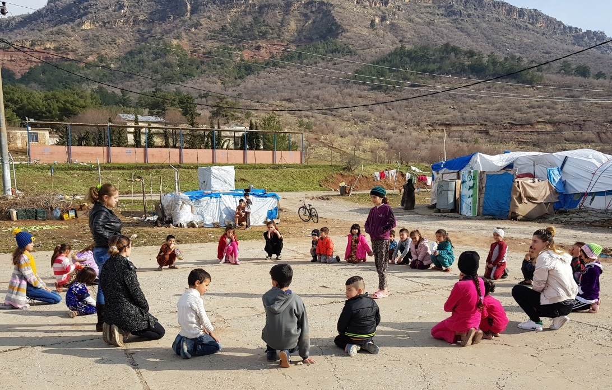

كنيسة الناصري الإنجيلية هي كنيسة مسيحية بروتستانتية تأسست عالميًا عام 1908 في الولايات المتحدة، وتركّز على تعليم الكتاب المقدس، والحياة المقدسة، وخدمة المجتمع. تنتشر في أكثر من 160 دولة حول العالم. ✨ أهم مبادئها: الإيمان بالكتاب المقدس كمرجع أساسي للإيمان والحياة. الدعوة إلى الخلاص بالإيمان بيسوع المسيح. التشديد على حياة القداسة والنمو الروحي. الاهتمام بخدمة الرحمة والعمل الإنساني. التلمذة وبناء القادة الروحيين. 📖 مجالات خدمتها: العبادة الأسبوعية والتعليم الكتابي. مدارس الأحد للأطفال والشبيبة. خدمة الصلاة والمشورة الروحية. المساعدات الإنسانية للفقراء والمحتاجين. المؤتمرات الروحية وبناء القادة. في كوردستان – دهوك، تأسست خدمة كنيسة الناصري عام 2007، واستمرت في تقديم خدمات روحية وإنسانية متنوعة للمجتمع بمختلف مكوناته، مع التركيز على التعليم، الرحمة، وبناء العائلات.